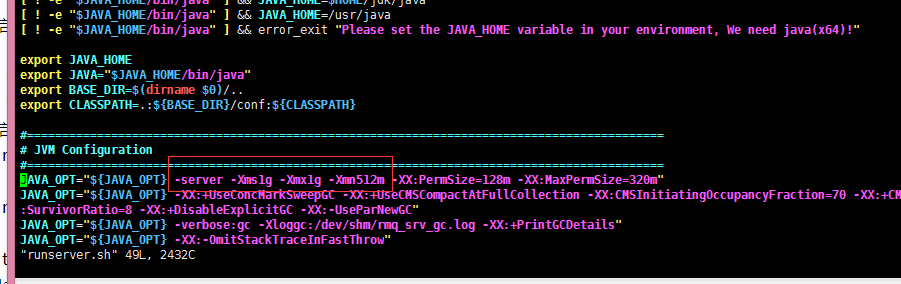
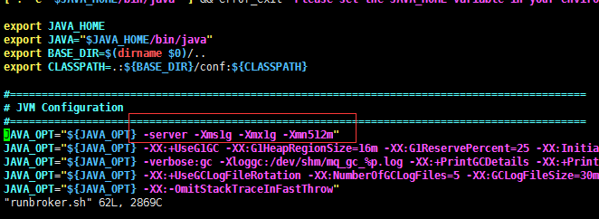
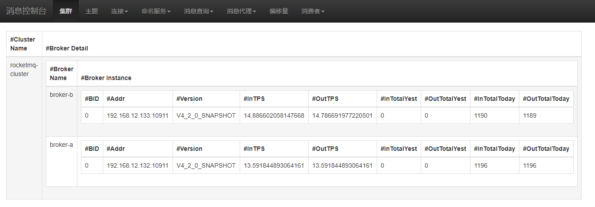

RocketMQ 配置多master
一、准备工作
1、虚拟机安装两台 Centos7
2、jdk8
3、maven 3.5.0
4、git
二、下载并编译
git clone -b develop https://github.com/apache/incubator-rocketmq.git |
三、修改broker 的配置文件
1、两台电脑都要修改
vim /usr/local/rocketmq/conf/2m-noslave/broker-a.properties |
再多一台就broker-c.properties ,以此类推可以添加多台。。
2、修改的内容如下：
#所属集群名字 |
只需要修改brokerName这个属性就行，nameservAddr这个使用域名，下面会修改hosts文件。
当然也可以用ip,如果用ip，下面的hosts文件配置就可以不用配，这里配的原因主要是为了方便而已没其他含义
四、修改/etc/hosts 文件(可选，如果上面的nameservAddr用ip,这个步骤可跳过)
1、两台电脑都要修改
127.0.0.1 localhost localhost.localdomain localhost4 localhost4.localdomain4 |
2、测试: ping 一下
ping rocketmq-nameserver1 |
五、修改日志配置文件
1、两台电脑都要修改
mkdir /usr/local/rocketmq/logs |
六、修改启动脚本（可不用修改，我是用虚拟机,内存不够,所以改改）
1、修改 bin/runserver.sh

2、修改 bin/runbroker.sh

都是改成1G 和 512M
七、启动
1、启动 nameserver
nohup sh localbin/mqnamesrv & |
2、启动 broker
|
3、端口开放
1、注意开放端口
- 9876 （nameserver 端口）
- 10909（主要是fastRemotingServer服务使用）
- 10911（Broker 对外服务的监听端口）
- 10912 (Master 和Slave同步的数据的端口，)
2、废话一下:
/dev/null ：代表空设备文件> ：代表重定向到哪里，例如：echo “123” > /home/123.txt1 ：表示stdout标准输出，系统默认值是1，所以”>/dev/null”等同于”1>/dev/null”2 ：表示stderr标准错误& ：表示等同于的意思，2>&1，表示2的输出重定向等同于1
1 > /dev/null 2>&1 语句含义：1 > /dev/null： 首先表示标准输出重定向到空设备文件，也就是不输出任何信息到终端，说白了就是不显示任何信息。2>&1：接着，标准错误输出重定向（等同于）标准输出，因为之前标准输出已经重定向到了空设备文件，所以标准错误输出也重定向到空设备文件。
八、代码示例
1、 Consumer类
package com.alibaba.rocketmq.example.quickstart; |
2、Producer类
package com.alibaba.rocketmq.example.quickstart; |
